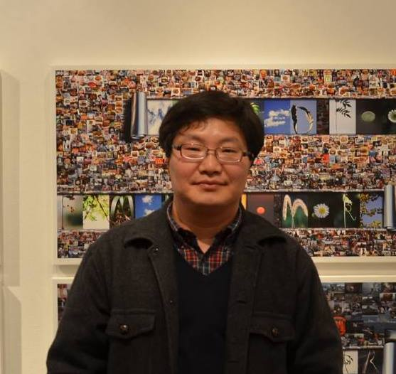

学び力が、創る力に変わる
〜人間の知恵×AIの力で「実践知」を再定義する〜
AIは「置き換え」ではなく「拡張」のためのツールです。中高年層が持つ現場感覚・人間関係・社会的理解と、最新のAI技術を掛け合わせ、社会に価値を生み出す人材を育成します。
講座の詳細を見る共創型人材育成の3本柱
リテラシー
AIを「怖がらず」、使い方を知る。生成AI、データ分析、倫理・プライバシーの基礎を習得します。
プラクティス
AIをビジネスや地域課題に活かす。現場の課題をAIで分析し、解決策をプロトタイピングします。
コラボレーション
経験を持つ人が「AI活用の橋渡し役」へ。若手技術者との協働やAI導入のコーディネート力を養います。
選べる2つのコース
初級者編：AI基礎理解と活用実践
対象：AIを利用したことがない方、インターネット検索を日常的に使っている方
- AIの基礎知識と倫理（ハルシネーション・著作権等）
- 生成AIによる文書作成入門（プロンプトの基本）
- 情報収集と要約の技術（ウェブ検索におけるAI活用）
- 音声入力と議事録作成（業務効率化の体験）
- セキュリティとデータの扱い
受講料：55,000円（税込）
中級者編：AI開発とビジネス応用
対象：AIを活用して、定型業務の効率化やクリエイティブな事業提案を行いたい方
- 応用プロンプティングとペルソナ設計（RAGの理解）
- ビジネス・地域課題のための情報収集・分析
- クリエイティブコンテンツの生成と演習（画像生成等）
- AI導入計画とリスクマネジメント
受講料：88,000円（税込）
講師・指導体制

鄭 萬溶（博士・工学）
沼津高専電子制御工学科・教授
専門は非線形振動・人工知能。深い知見と、長年DCON（高専ディープラーニングコンテスト）を中心とした「AIによる課題解決とその社会実装」に取り組んでいる。 DCONには、2019年の第0次大会から６回の本選出場を果し、最多出場を誇る。
※演習補助として沼津高専学生（2〜4名）がサポートに入ります。
受講生の声
「AIは自分には関係ないと思っていましたが、この講座で考えが変わりました。日常がもっと楽しく、便利になるヒントがたくさんありました。」
60代・女性
「パソコンが苦手な私でも、本当に理解できるか不安でした。しかし、先生が根気強く教えてくださり、今ではAIで趣味の俳句を作るのが日課です。」
70代・男性
「仕事で若い人たちとの会話についていけるか心配でしたが、AIの知識を得たことで、自信を持ってコミュニケーションが取れるようになりました。」
50代・男性
よくある質問
パソコン初心者でも大丈夫ですか？
はい、もちろんです。本講座は、パソコンの基本的な操作（文字入力やマウス操作）ができれば、どなたでもご参加いただけます。専門的な知識は一切不要です。
講座で使うものは何ですか？
インターネットに接続できるパソコン（WindowsまたはMac）をご用意ください。講座によっては、スマートフォンやタブレットを使用することもあります。
欠席した場合の補講はありますか？
はい、講座内容はすべて録画しており、後日視聴することが可能ですのでご安心ください。
お問い合わせ
ご質問やご相談など、お気軽にお問い合わせください。